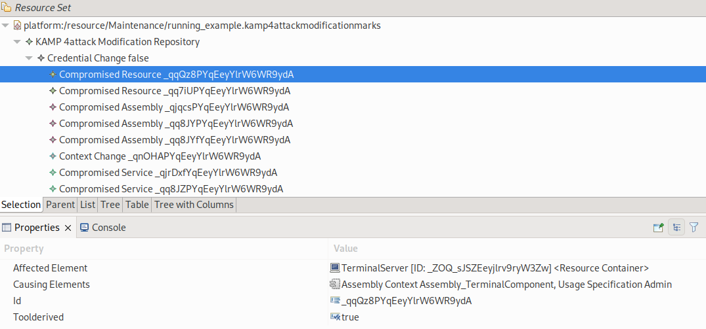
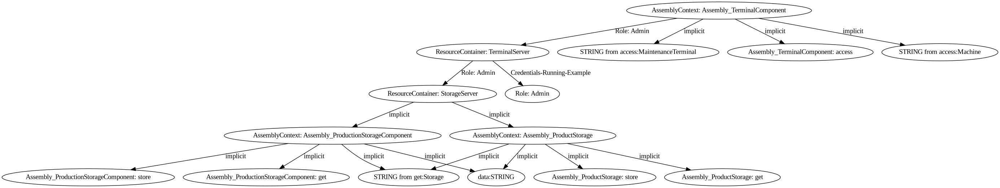

Analyzing Scenario-based Access Control Policies
Analysis Execution
The analysis can be started via an Eclipse launch configuration. The launch configuration name is Attackeranalysis. It can be created in Eclipse by clicking Run->Run Configurations. This opens a dialog similar to the example image below. There select Attackeranalysis (left side). This creates a new launch config for the attacker analysis. For the scenario-based access usage analysis select as analysis type Scenario. Afterwards select the software architecture models you want to analyse. For the scenario analysis, we need the Repository Model, Context Model, Usage Model. The model can be selected either as reference from the workspace (recommended) or from the file system.

Note
The selected models need to be compatible to each other. For instance, the Repository Model needs to contain the components stored in the Usage Model. The analysis does not perform checks, whether the models are complete and all the references are valid. Such cases might create randoms errors.
Analysis Results
There are two results files for the attack propagation possible. The first is the modification mark model and the second is the attack graph image.
Modification Mark Model
In the kamp4attackmodificationmarks model the regular output is stored. It contains two elements. The KAMP4AttackSeedModifications where the attacker for the propagation is selected. The actual output is then stored in the CredentialChange element. It contains a list of compromised architectural elements.
{kind=link}
The screenshot shows an excerpt of the output model for the Maintenance Scenario (Running Example). It shows the compromised architectural elements. In our case, we selected (blue) the first compromised resource. In the properties view the additional properties are show. The Affected Element shows which architectural element is compromised (here TerminalServer). The Causing Elements show the source and reason for the compromisation. Here the attacker attacked from the TerminalComponent by using the Admin credentials. Every architectural element in this field is the source of the attack. Vulnerabilities or credentials (UsageSpecification) are the reasons. The ID is the unique id of the element. The last element is Tool Derived. It indicates, that the element is automatically derived from our analysis. If the value is false it is from the initial configuration.
Note
The model also contains container for dynamically created elements. Since in EMF every modelled must be contained in one container, we need to store these dynamically generated model elements somewhere. They cannot be stored in the originally models, therefore we contain them here.
Attack Graph Image
By activating the graph creation, our analysis produces an attack graph. The image shows the attack graph from the Maintenance Scenario (Running Example).
{kind=link}
Each node is either an architectural element, data element or role. The type is indicated with the textual description. Architectural elements are always “Type: Name”. The types are AssemblyContext, LinkingResource, or ResourceContainer. Data elements are either “datatype from instantiated Service ” for return values from services or “Name: parametername” for parameter values. Credentials are indicated by “Role: name”.
The edges contain the reason for compromising an element. A element can be compromised by using credentials, vulnerabilities or implicit. The propagation by credentials is indicated by “Role: name”. For vulnerabilities only the name is written on the edge. Implicit propagations use our assumptions. For instance in our example is that by compromising a component all data is affected.
Note
Despite that it might be assumed by the graphical representation, the graph does not always show the order of the attack propagation. It only shows the affected element and by which element it was affected.